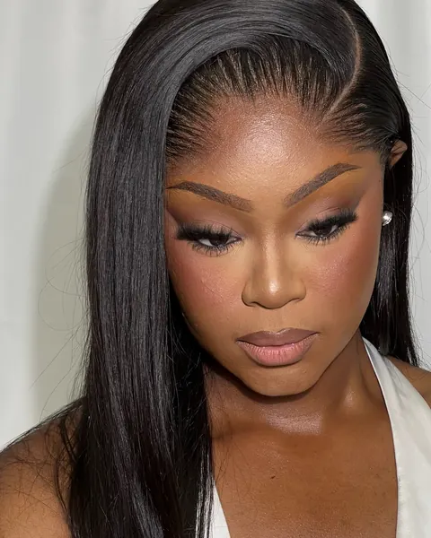
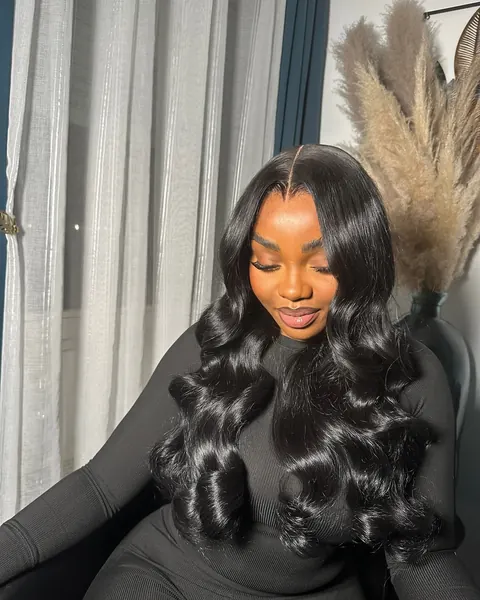
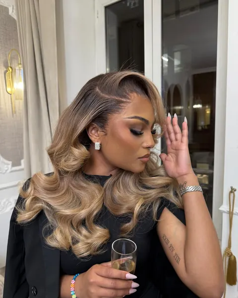

Formation tissage
550 €
5 h · 1 journée
Les étapes d'un tissage professionnel et les tactiques de styling de l'institut.
RéserverCoiffeuse diplôméeFormation professionnelle
Apprenez les techniques de l'institut auprès d'une coiffeuse diplômée : tissage, confection à la machine, pose lace et ponytail, en une ou deux journées complètes.



Tarifs
Tarifs et durées indicatives. Un acompte de 30 % confirme la réservation.
550 €
5 h · 1 journée
Les étapes d'un tissage professionnel et les tactiques de styling de l'institut.
Réserver500 €
5 h · 1 journée
Les étapes d'une confection complète de perruque à la machine.
Réserver500 €
5 h · 1 journée
Les techniques de pose de perruques (blanchiment des nœuds, customisation, pose) et le styling sur une pose perruque.
Réserver1 000 €
10 h · 2 journées
La confection complète d'une perruque à la machine, les techniques de pose (blanchiment des nœuds, customisation, pose) et le styling sur une pose perruque.
Réserver400 €
4 h · 1 journée
Les étapes d'une ponytail simple et/ou sophistiquée.
RéserverTrouver sa formation
Touchez votre objectif : la formation correspondante s'illumine dans la liste.
Le programme
Coiffure au Rendez-Vous vous montre chaque étape de la technique choisie, de la préparation à la finition.
Couture des mèches, confection à la machine, blanchiment des nœuds, customisation, pose : les techniques qui font la différence, selon la formation.
Les tactiques de styling réalisables sur une pose, pour un résultat professionnel.
FAQ
Une journée complète pour les formations tissage, confection perruque, pose lace et ponytail ; deux journées pour la formation confection + pose perruque.
Les étapes d'une confection complète de perruque à la machine, les techniques de pose (blanchiment des nœuds, customisation, pose) et le styling réalisable sur une pose perruque.
Depuis la page Réserver, en sélectionnant la formation, ou directement sur WhatsApp au 07 62 74 78 82. Un acompte de 30 % confirme votre place.
Découvrir aussi
Choisissez votre prestation, indiquez la date souhaitée : votre demande part en un geste sur WhatsApp ou par SMS.